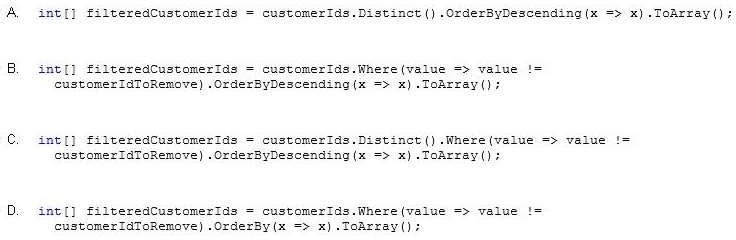
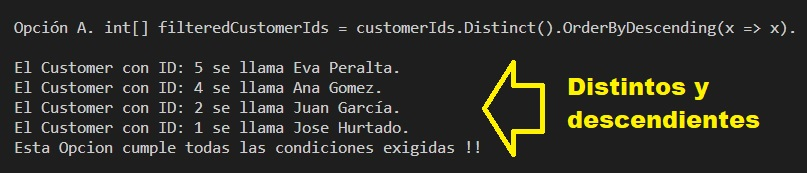
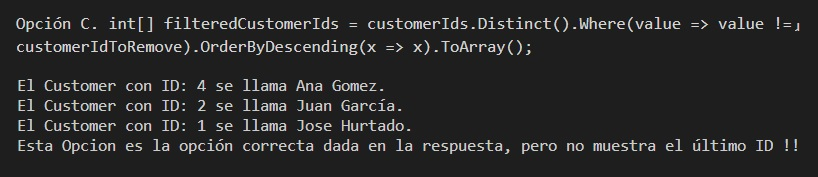

You are developing an application. The application calls a method that returns an array of integers
named customerIds.
You define an integer variable named customerIdToRemove and assign a value to it. You declare an array
named filteredCustomerIds.
You have the following requirements:
-
Remove duplicate integers from the customerIds array.
-
Sort the array in order from the highest value to the lowest value.
-
Remove the integer value stored in the customerIdToRemove variable from the customerIds
array.
You need to create a LINQ query to meet the requirements.
Which code segment should you use?

A. Option A
B. Option B
C. Option C
D. Option D
Correct Answer: C
Section: Volume A
Explanation
Explanation/Reference:
Explicación
Creemos que aquí hay una errata. Ya que la respuesta no da la respuesta a los
requirimiento. La Respuesta correcta es la opción A.
*********************************************
LISTA DE TODOS LOS CUSTOMER EN EL ARRAY !
*********************************************
- El Customer Joe Smith tiene un ID: 1
El Customer Jose Hurtado tiene un ID: 2
El Customer Juan García tiene un ID: 2
El Customer Pedro Martinez tiene un ID: 4
El Customer Ana Gomez tiene un ID: 5
El Customer Eva Peralta tiene un ID: 5
El Customer Lucia Oses tiene un ID: 4
**********************************************
LISTA DE TODAS LAS OPCIONES DEL EJERCICIO
**********************************************
- Opción A. int[] filteredCustomerIds = customerIds.Distinct().OrderByDescending(x =>
x).ToArray();
- El Customer con ID: 5 se llama Eva Peralta.
El Customer con ID: 4 se llama Ana Gomez.
El Customer con ID: 2 se llama Juan García.
El Customer con ID: 1 se llama Jose Hurtado.
Esta Opcion cumple todas las condiciones exigidas !!
- Opción B. int[] filteredCustomerIds = customerIds.Where(value => value !=
customerIdToRemove).OrderByDescending(x => x).ToArray();
- El Customer con ID: 4 se llama Ana Gomez.
El Customer con ID: 4 se llama Ana Gomez.
El Customer con ID: 2 se llama Juan García.
El Customer con ID: 2 se llama Juan García.
El Customer con ID: 1 se llama Jose Hurtado.
Esta Opcion no cumple la condición de valores distintos en el ID !!
- Opción C. int[] filteredCustomerIds = customerIds.Distinct().Where(value => value !=
customerIdToRemove).OrderByDescending(x => x).ToArray();
- El Customer con ID: 4 se llama Ana Gomez.
El Customer con ID: 2 se llama Juan García.
El Customer con ID: 1 se llama Jose Hurtado.
Esta Opcion es la opción correcta dada en la respuesta, pero no muestra el último ID
!!
- Opción D. int[] filteredCustomerIds = customerIds.Where(value => value !=
customerIdToRemove).OrderBy(x => x).ToArray();
- El Customer con ID: 1 se llama Jose Hurtado.
El Customer con ID: 2 se llama Juan García.
El Customer con ID: 2 se llama Juan García.
El Customer con ID: 4 se llama Ana Gomez.
El Customer con ID: 4 se llama Ana Gomez.
Esta Opcion no cumple la condición de valores distintos en el ID !!
Respuesta:
La Respuesta correcta para nosotros es la opción A tal y como se muestra en la siguiente imagen:

La opción C que es dada como correcta, no lo es ya que no muestra todas las IDs que se tienen
en la respuesta correcta.
Ver la suguiente imagen:

Mostrando de manera visual la respuesta:
Fuentes:
|